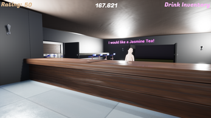
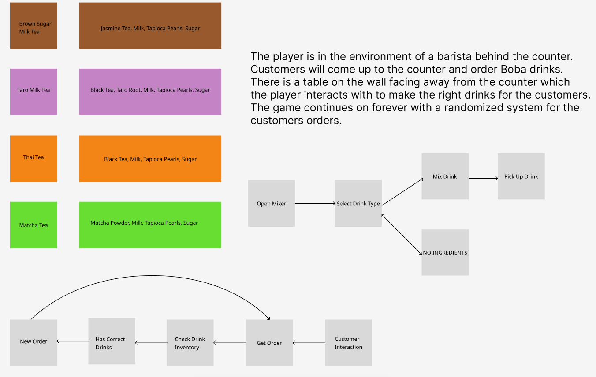
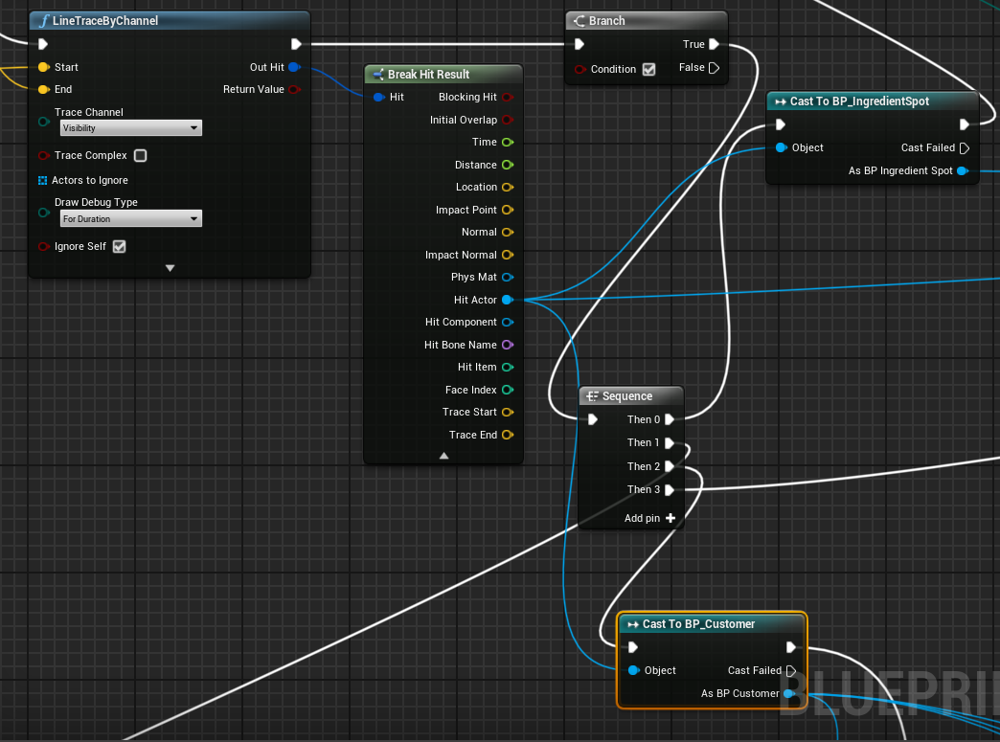
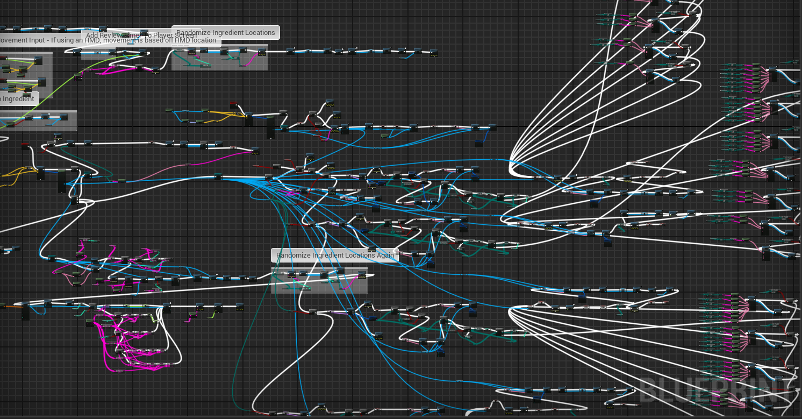

Boba Barista Simulator
A fast-paced barista simulator where the player must prepare and serve drinks to customers within a time limit.
Responsibilities: Solo Developer
Tech: Blueprints, C++
Process
Inital Idea
Interaction Logic
Inital Testing
What I Learned
First Time Using a 3d Game Engine
Going into this project, I had no experience with 3D game engines.
I had no idea what line tracing, nav meshes, static meshs, or how to give my objects physics properties.
I couldn't even figure out how to write the gitignore file to get my project into github until much later than it should have been.
I had many trial and error moments throughout the development process. But step by step, I learned and built my mental map of understanding the game engine which made my proceeding games in both Unreal and Unity much easier.
Why Programming is Easier Than Blueprints
I assumed the blueprint system would be easier because I could visualize my logic.
However, this turned out to be completely wrong when dealing with many different interactions and lists, wires were entangled and hard to trace.
Debugging became time-consuming and very very frustrating.
In the future, I'll use blueprints for simple UI interactions and visual logic, but prefer C# for complex systems. I now know to use more public variables and split the blueprint logic into different function graphs.
Blueprint logic (I am well aware this looks atrocious)
